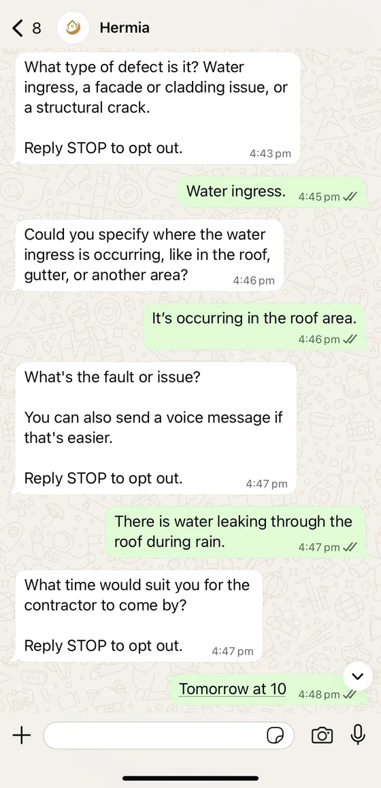
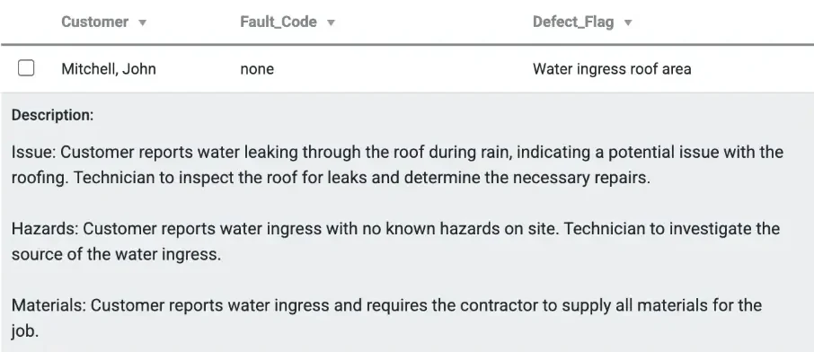
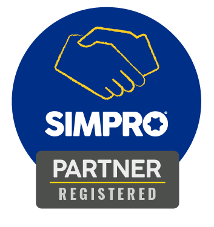
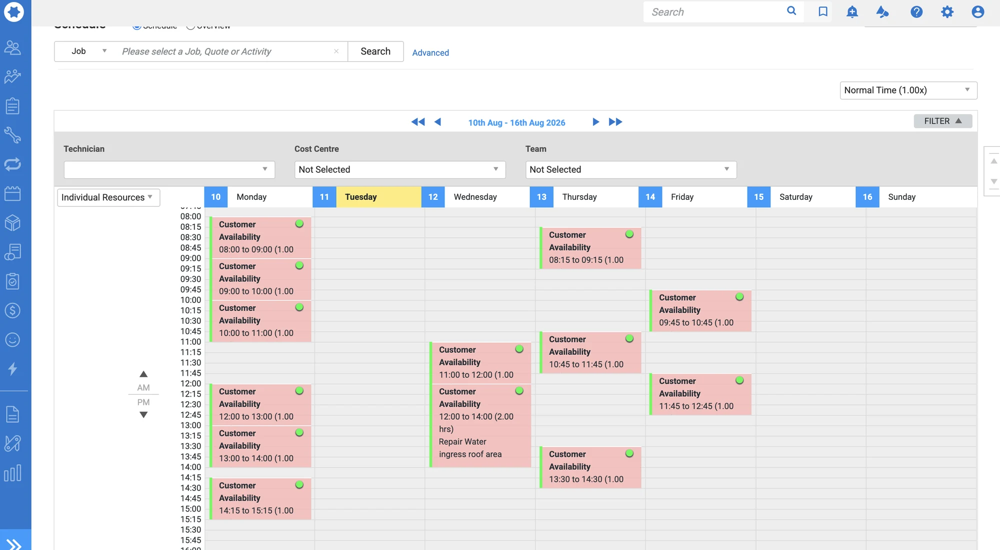

Receive.
Connected or forwarded email and approved messaging or enquiry sources

For a trade team, an incoming alert is rarely the whole job. Hermia asks for the missing detail and prepares a useful starting point for the office, the technician and the approved field-service workflow.
Current, scoped trade onboarding. The trade pathway is configured around the business systems, channels, questions and handoff the client approves.
Here is how a commissioned trade pathway can operate.
Connected or forwarded email and approved messaging or enquiry sources
Which asset or area is affected, what is happening, where is it, is there an immediate safety concern, and how can the team access the site?
A structured job brief, private email docket for configured recipients and a supported Simpro or AroFlo handoff where commissioned.
Short, vague replies are clarified one question at a time. What reaches your team is a structured Open Lead: the defect flag, the issue, hazards and materials already written up, with the preferred time passed on for your team to confirm.


Supplied test conversation and an edited Simpro Open Lead preview from Hermia’s site files, with test details only. Shown to illustrate the handoff a configured Simpro pathway prepares; it is not a customer result, and your team still assesses the job, the quote and the booking.
Hermia has a registered Simpro partner badge. Supported Simpro and AroFlo handoffs are configured for the particular contractor and tested before activation; a badge alone is not proof of an individual customer booking.


Hermia does not replace on-site inspection, safety assessment, licensed work, the final quote or a contractor’s decision to schedule. Booking is available only where the business explicitly enables and tests that path.
Yes. Hermia is designed to clarify enquiries you already receive through approved connected or forwarded sources. It does not generate leads.
On a configured trade workflow, the completed brief can be sent separately to each approved internal email recipient. The team chooses who receives it.
You can request a question or route change. It is recorded for a client-specific build and must be implemented and tested before it becomes active.
Trade checkout records your choices; new custom questions or connections are built and tested before activation.